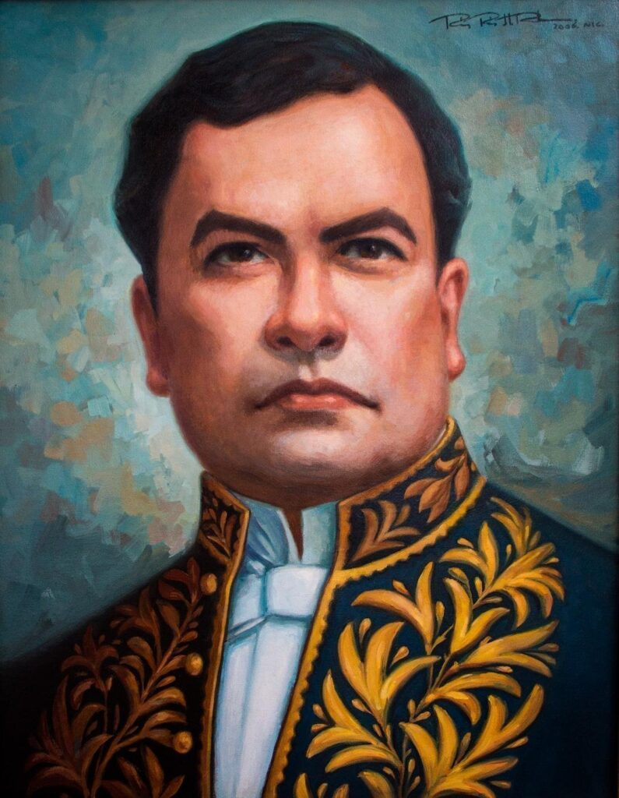
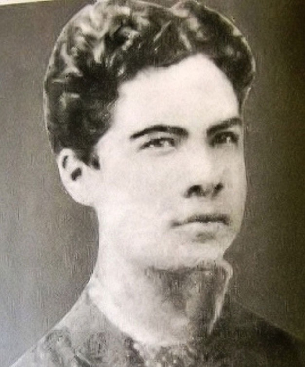
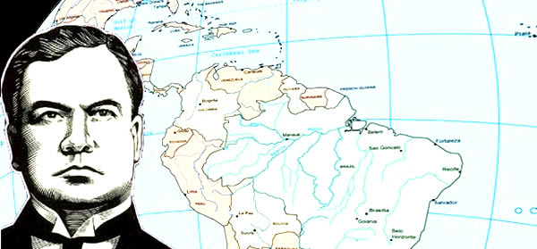
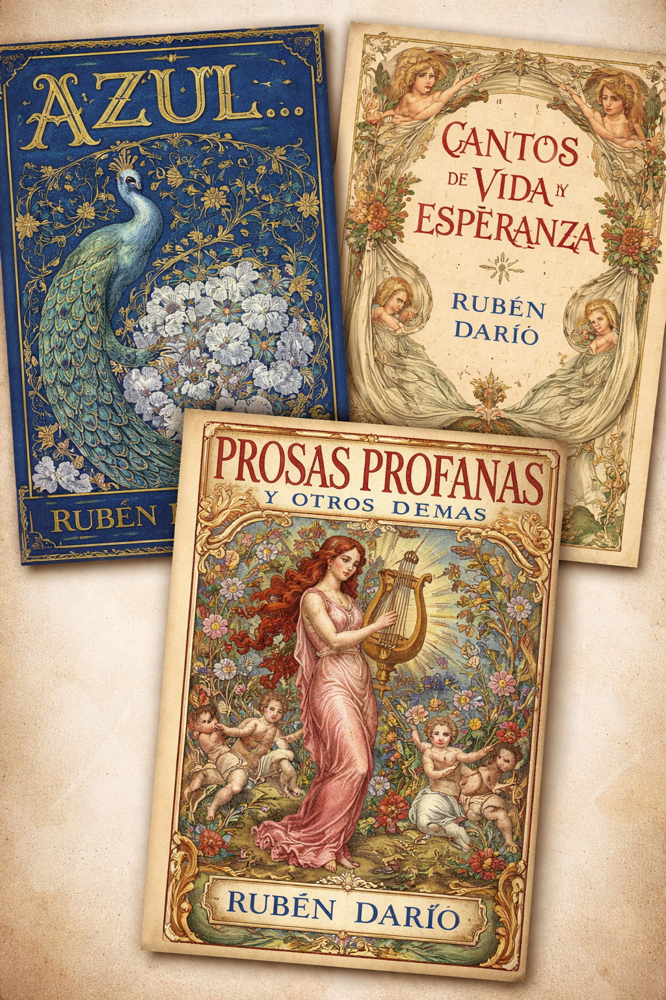

Félix Rubén García Sarmiento, conocido universalmente como Rubén Darío, nació el 18 de enero de 1867 en Metapa, hoy conocida como Ciudad Darío, en Nicaragua.
Fue poeta, periodista y diplomático, y es considerado el máximo representante del modernismo literario en lengua española. Su obra cambió profundamente la poesía hispana, introduciendo nuevas formas, ritmos, imágenes y una estética completamente renovadora.
Rubén Darío no solo fue un gran escritor nicaragüense, sino también una figura central de la literatura universal.

Rubén Darío creció en un ambiente familiar complejo. Sus padres se separaron cuando él era muy pequeño, por lo que fue criado principalmente por sus tíos abuelos en la ciudad de León, Nicaragua.
Desde temprana edad demostró una inteligencia y sensibilidad extraordinarias. A los doce años ya escribía poesía y era reconocido por su talento literario. Muchas personas lo llamaban “el poeta niño”.
Durante su juventud tuvo acceso a numerosos libros de literatura española, francesa y latinoamericana, lo que influyó profundamente en su estilo.

Rubén Darío durante su juventudEn su adolescencia Rubén Darío comenzó a publicar poemas en periódicos locales. Su talento llamó la atención de intelectuales y escritores de la época.
En 1886 viajó a Chile, donde desarrolló gran parte de su carrera literaria temprana. Allí trabajó como periodista y publicó algunas de sus primeras obras importantes.
Fue en Chile donde comenzó a consolidar su estilo literario innovador.
En 1888 publicó su famosa obra "Azul…", considerada el inicio del modernismo literario. Este movimiento buscaba renovar la poesía en lengua española mediante el uso de nuevos ritmos, musicalidad y simbolismo.
El modernismo introdujo influencias de la literatura francesa, especialmente del simbolismo y el parnasianismo.
Rubén Darío se convirtió rápidamente en el líder de este movimiento literario.
 Portada histórica de "Azul..."
Portada histórica de "Azul..."
Rubén Darío vivió en varios países a lo largo de su vida. Residió en Chile, Argentina, España y Francia, entre otros lugares.
También trabajó como diplomático representando a Nicaragua en diversas misiones internacionales.
Durante sus viajes conoció a numerosos escritores, artistas e intelectuales, lo que enriqueció aún más su obra literaria.

Rubén Darío viajo a distintos paises a lo largo de su carreraEntre las obras más destacadas de Rubén Darío se encuentran:
• Azul… (1888) • Prosas profanas (1896) • Cantos de vida y esperanza (1905)
Estos libros consolidaron su reputación como uno de los más grandes poetas del mundo hispanohablante.

Obras mas popularesDurante los últimos años de su vida, Rubén Darío enfrentó problemas de salud y dificultades personales. A pesar de ello, continuó escribiendo y participando en la vida intelectual de su tiempo.
Falleció el 6 de febrero de 1916 en León, Nicaragua.
Su funeral fue uno de los más grandes en la historia del país, demostrando el enorme respeto y admiración que el pueblo nicaragüense sentía por él.
 Monumento fúnebre en honor a Rubén Darío
Monumento fúnebre en honor a Rubén Darío
El legado de Rubén Darío continúa vivo hasta nuestros días. Su influencia se puede ver en innumerables poetas y escritores del mundo hispanohablante.
Es considerado un símbolo de la identidad cultural nicaragüense y una de las figuras más importantes de la literatura universal.
Hoy en día su obra se estudia en escuelas, universidades y centros culturales de todo el mundo.